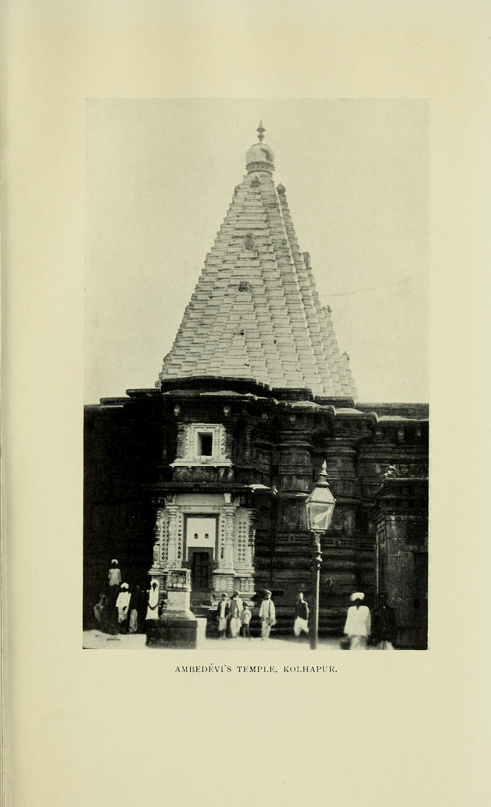

Wikimedia Commons · Public domain ⇗
Sthala Puranam
The Karaveera kshetra of Kolhapur is the seat of Mahalakshmi, installed at the heart of an ancient city ruled by the Chalukyas and later by the House of Kolhapur. The Shakti Peetha tradition calls this the Shri Pitham, the seat associated with the eye of Sati.
Explanation
Goddess Mahalakshmi here is worshipped as Aai Ambabai, in a black stone image known as the Rakta Shaligram, set in a golden cube. The temple, built in the Hemadpanthi style, is believed to be among the oldest standing temples of the region. The image holds a Kumbha, a Marud, a Chal and a Chataka in her four hands, and is venerated with elaborate Dhuparti. Devotees regard Kolhapur, Sringeri and Machilipatnam as the three seats of Lakshmi on earth.
Why the temple is revered
Mahalakshmi of Kolhapur is revered as giver of wealth, sovereignty and wellbeing, bestowing the grace of the Goddess Shri. The shrine draws lakhs during the Navaratri Kumbh mela and the Aai festivals, and the idol is regarded as a living, breathing source of compassion in Maharashtra Saiva-Shakta devotion.
🕉 Story
The Mahalakshmi tradition at Kolhapur is one of the great centres of Goddess worship in Maharashtra.
✨ Significance
The temple is one of the most important pilgrimage centres in western India.